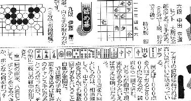
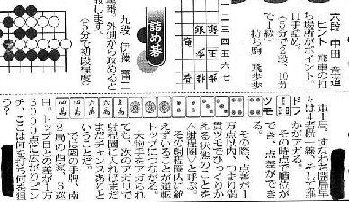

某スポーツ紙のクイズコーナー。囲碁将棋と麻雀がひとまとめになっている。このスポーツ紙にかぎらずくあるパターン。しかしこのパターンを見るたびに、いつも思うことがある。


この紙面でも分かるとおり、麻雀は囲碁将棋を合わせたのと同じスペースを取っている。そこで囲碁将棋は問題文を記述するのが精一杯。しかし麻雀は、「では図の手牌」からの数行が問題文。
あとの３分の２ないし４分の３は、この問題とは直接関係のない解説。囲碁将棋に与えられない解説スペースを麻雀に与えてくれるのは、それだけ新聞社が麻雀を大切に思っている証拠。いや、まことに喜ばしい.....って、んなワケはねえ.....
単純に云って麻雀が囲碁＋将棋と同じスペースとなっているのは、新聞が縦書きのせい。いくら新聞が縦書きでも、麻雀の手牌は縦に図示できない。そこで横並びで図示する。しかし文章は縦書き。すると手牌の下に広大なスペースができる。かといって読みやすさを考えれば１行を２文字や３文字にするわけにはゆかない。そこで問題文のほかに、ありがた〜い解説が必要となる。
ほんのわずかな間だけれど、某スポーツ紙（なんと九州のスポーツ紙）に何切る問題を掲載したことがあった。＃別にσ(-_-)の才能が認められたからではない。執筆者が急病になって、１ト月ほど代筆しただけ。いまから思えば休載すれば済むことと思うが、休載したくない事情があったようだ）。
そのとき面倒だったのが、この解説。問題と直接関係ないことをナンタラカンタラと書かなくてはならない。もちろんこういう事を書くのが得手な人もいると思うが、σ(-_-)は不得意
and 面倒くさがり屋。
そこでずっと「手牌が横並びなんだから、本文も横書きに知ればいいのに。そうすれば１行15文字くらいとして、数行で収まる。紙面全体にも少しスペースが生まれ、新聞社も助かる、出題者も楽、原稿料は変わらない、という一石三鳥」ではないかと思ってる。（^-^；
|